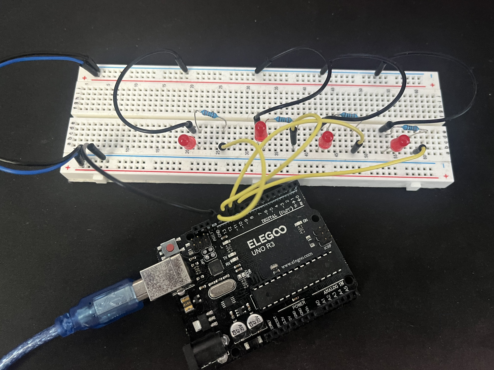

As an enthusiastic undergraduate pursuing a degree in Computer Engineering,
I am embarking on a dynamic journey of continuous learning, profound growth, and
groundbreaking innovation. Fueled by a fervent passion for technology, I am a self-driven
individual who approaches challenges with determination and curiosity. I am driven to make
new discoveries and advancements in both the realms of software and hardware, while also
exploring the seamless integration between the two. With an eagerness to create a positive
impact on the world, I am committed to pushing the boundaries of innovation.


Created a real-time Arduino Weather Station for monitoring and displaying environmental conditions using sensors and digital signal processing.
Designed and implemented a high-performance FPGA hardware accelerator using Verilog to optimize machine learning model training and inference processes.

Created a comprehensive gesture-controlled smart home system, integrating hardware sensors and AI-based recognition to enable seamless and intuitive home automation.
An intricate circuit employing a precise combination of resistors, capacitors, transistors, op-amps, and more to craft a high-performance microphone with exceptional audio quality.

Binary LED Display with Arduino: Create a binary LED display with Arduino that visually represents numbers between 0 and 15 using LEDs.
Signal Filtering with SciPy: Python script for generating and visualizing original and filtered sine waves using a Butterworth low-pass filter.